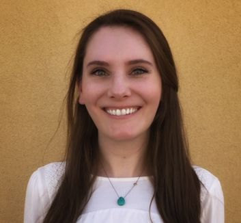

"Mountains and rivers
Lands apart
Wind and the moon under the same sky"
That is the fragment of a poem Japan included in the packages of thousands of face masks and infrared thermometers donated to Wuhan.
The original poem ("Although mountains and rivers set us apart, we share winds and the same moon in the sky. Sending these robes to you Buddha's Disciples. Let us create eternal connections together") was sent by Japanese prince Nagaya of the Nara period (710-784) to the Tang Dynasty (618-907). Japan made a thousand Buddhist robes and sent them to China together with the poem with the wish to invite a teacher to come and help deepen their Buddhist practice.
It is said that Monk Jianzhen went on an epic journey to teach Buddhism in Japan after reading the poem.
We are in the third week of the lockdown here in Spain and I can’t stop thinking how we are all under the same sky.
Perspective and Change
Kaisen Lin
March 20, 2020
I remember when I was back in school in San Diego, a wildfire ravaged the county during
California wildfire season, turning the skies orange and black with smoke. It was a terrible
event, killing several people and causing billions of dollars in damages. Not only were lives
lost, but also livelihoods. This COVID19 pandemic has already taken far more lives and done far
more damage than those California wildfires, causing numerous states to issue a shelter-in-place
directive with no end in sight. And similar to the wildfires, lives are being lost and
livelihoods changing. Although both of these events are not to be treated lightly and demand our
respect, it is also important to acknowledge that there are often multiple perspectives on every
event, even catastrophic ones, and that changes to our livelihood are not always bad.
The California wildfires had the side effect of shutting down classes for a week, which enabled
me to prioritize other aspects of my life. This shift in priority ultimately turned out to be
life-changing in retrospect, but I would never have known that at the time. In our current
situation, it is too early to tell if any changes I make will be life-changing in the future,
but here are some that come to mind:
I've started reconnecting with friends that don't live in the bay area. Because you can't
meet with people in real life anymore, video calling people 10 miles away is the same as
video calling people 1000 miles away (except for timezone changes).
I've started recycling more aggressively. Because I'm at home much more, I also generate a
lot more trash, often overflowing my trash bin.
I've refreshed my disaster kit. California is wildfire, drought, earthquake, and now (only
temporarily I hope) pandemic country. Disaster preparedness is everyone's responsibility
because there are only a limited number of professional first-responders.
There are also other anecdotal stories involving societal empathy among teachers, healthcare
workers, grocery store workers, extroverts, and many more. These stories help to strengthen our
human connection and understanding of others. As we go through this challenging time, it is
important to keep an open perspective on things. We must do our best to protect those most
vulnerable in our community by sheltering-in-place and social distancing, but also pay attention
to changes in our livelihood that may ultimately help us. As Buddha once said, "Nothing is
forever except change".
Daybreak After Zazen
Lini Wollenberg
March 26, 2020
Daybreak after zazen today in Vermont. Yes it's spring!
Birds and Clouds
Columbine Robinson
March 27, 2020
Feeling

Anna Breckenridge
March 27, 2020
One thing I've learned from my sitting practice is that sometimes I feel things physically
before I fully process my thoughts. This seems especially true in rapid times of change like
this. I know I've been feeling grief over the last two weeks and I see it around me too. I'm
glad we can walk through it together (metaphorically) and I have trust that holding compassion
and patience will help us. I hope everyone is working with their community in that spirit.
Photo: An improvised altar for the shelter in place
Priorities
René Sterental
April 1, 2020
As I settle in (4 weeks already) for what I expect to be a year+ long new lifestyle of social
seclusion, working from home, close and tight interactions with my wife and two (out of three)
grown children plus our 7 month old puppy, I can only feel an intense sense of calm, and comfort
in the knowledge that the new virtual practice at 5:30am followed by the wonderful virtual
coffee meeting provides a steadying mantle of peace, support and connection that will help me to
not only continue to stick to the practice, but most importantly, feel a strong sense of
connection to a group of people I value and respect, because in their similitude (Zen practice)
they are all different.
I started going to Kannon-do almost 2 years to the start of the Coronavirus measures here in the
Bay Area. Not really knowing why, but trusting my instincts in the journey I was on, it proved
crucial in helping me manage my Stage IV lung cancer diagnosis a few months later. For a few
weeks here or there, for various reasons during these 2 years, I meditated at home when I wasn't
able to go to the zendo in the early mornings. It didn't feel that different and several months
after I started, I could do the 40 minutes at home by myself. I didn't really know what the
difference of doing it by myself vs. going to the zendo (other than being able to sleep longer)
truly was. Well, if I didn't go in the morning, I couldn't go to coffee afterward, which from
the very early days, became a hugely important part of the morning routine. Without those
Starbucks mornings, I would not have been able to meet, talk to and learn from the small group
that goes to coffee, which on its own, made a huge difference.
In the end, in addition to the morning coffee meetings, I decided that the most important reason
to continue to wake up earlier in the mornings to go to Kannon-do for Zazen, was to prevent the
risk of slowly drifting away from the practice if I just decided to do it alone. Or so I
thought. In this new crisis we are living, I realize that keeping together, even virtually, is
about so much more. Our new virtual morning Zazen followed by the virtual coffee chat, on the
surface are a detrimental experience to the real thing. But if you stop to think for a moment
(or feel), this is just a different "real", with no reason to compare it to the previous one.
It's real because it's now. It will change someday, which for me might be much longer than for
others, but we know that will happen with everything.
In the end, it's teaching me to just live the now I have, and to try to live it proactively.
It's giving me time to read and learn new things. I go on walks around the neighborhood with my
camera and take simple photos of things that I see (mostly flowers or plants) that are now. Take
my bicycle and explore new low traffic roads. My eBike is another example that you need to do
what is right for you now, and not what you thought or others told you is or isn't right. What
an enabler, to be able to climb hills and mountains without overdoing the exercise. Not being
confined to flat roads as I build my conditioning and endurance, so I can also reinforce my
immune system instead of weakening it by over stressing my body with "good" exercise.
This is a time of new learnings and opportunities, of adapting to change and continuing our
journeys. When I was first dealing with my cancer diagnosis, I came across a key question that
paralyzed me for a while: What is your reason to live? But it meant your own reason, not living
for others, or external reasons. If you ask the question yourself, and remove the usual answers
(for my children, spouse, parents, etc.), what is left? Why do you want to live? I'm not going
to describe the process I went through, but in the end, my answer (and decision) to live, simply
came to: I want to see where this journey will take me, what new surprises and experiences and
learnings await me! I have no idea what they are, but I do want to see where it ends. And since
that day, what I've lived through and done have amazed me. One day at a time, some better than
others, all to be lived one by one. The virtual new Kannon-do practice helps me start each new
day in the right place, even if for some reason I can't join. It's always there.
Watching a Rose Come to Full Bloom
Peter Dolan
April 2, 2020
Construction on our house came to a standstill, allowing my wife, dog, cat, and me to move from our garage back into our home ahead of schedule!
I've set up my desk to work in our guest room, facing a window that looks out over our garden, and I've spent the moments between meetings watching a rose gradually come to full bloom.
As I walk my dog around our neighborhood, more and more of my neighbors are home and spending time with their family in their yards. It's been a chance to wave, shout hello, and smile together in the sunshine.
As the Zen community adapts and shifts to online practice sessions, I've had the chance to attend services from the SF Zen Center and from Green Gulch, communities that I've always wanted to visit and experience but were difficult to reach before. In some ways, this has been a flourishing time for connection among the Zen communities!
My wife and I have enjoyed coming together at lunchtime to cook for each other and have tea, and I'm grateful for these new and precious chances to have simple and frequent connections with her.
And finally, I'm grateful for the chance to refocus on practice, to engage with this as an intensive practice session alongside the global community.
"Dating" in Quarantine
Liz Mabey
April 3, 2020
On February 8, I unexpectedly met someone who became a romantic interest, and we quickly decided to date exclusively. We barely had time to do that before the SIP order came, bringing several challenges. First we had to mindfully make the decision not to exempt ourselves from the distancing guidelines. The conversation where we worked our way from justifying our own preferences and convenience to considering the effect our behavior would have on people around us was a highly beneficial exercise that we wouldn't normally have had to do so early in our acquaintance. For example, I like to volunteer at the local food bank (see photo) and I just wouldn't feel right doing that knowing that I'd been fudging the lines of social separation. Our agreement was to treat the quarantine period as a blessing in disguise, focusing on how lovely it is to have someone to talk to at this time rather than feeling deprived by not being able to have dinner together in person. I found that resolving to keep a positive attitude with this person has resonated in other areas of life, helping me focus on things to be grateful for rather than giving in to self-pity. Of course I said "helping," not "ensuring." I've done my share of selfish whining! But overall I find that what seems to be a challenge truly is a gift. It's impossible to tell how things will develop between us going forward; I'm convinced, though, that the ethical rigor this outbreak has made necessary will benefit us whether we continue together or drift apart to find other partners.
What is Your Silver Lining?
Isabelle Johansen
April 3, 2020
The world is shaken by an unprecedented phenomenon. It feels like some kind of radical adjustment completely out of our control is operating. Social distancing is imposed, resulting in many getting closer to their loved ones. Some go from being super busy to having a lot of time to breathe and even look within now. Pollution, which has been quite worrisome, has drastically dropped everywhere on the planet. Yes, the current situation is challenging, but I’ve realized more than ever that where I focus my attention has a great power to drive my mood. No matter how I feel, life is what it is, so I’ve tried to find the silver lining in what’s happening. It has given me more energy and ideas to reach out to people. Recently my silver lining has been calling my mom more, enjoying nature and the blue sky, and hanging out with my children who are back home.
What’s your silver lining?
Inspired by You
Dan Geiger
April 4, 2020
I’m here with my 19 year old son and homebound in Mountain View. We are doing well and I am loving the online sangha that I join during the week. Les gave a moving dharma talk last Wednesday, and I now find myself hugging trees almost daily. Ha, try it, you’ll like it.
Great sorrow and great possibilities now. I am inspired to face up to these days by the admiration I have for the many of you.
MMXX
Diane Shea
April 6, 2020
Crowns of thorns growing
Suffering
World breathes fire
Sitting together
Survival Guide for Quarantine
Bonnie Sarmiento
April 7, 2020
Connecting
May Xu
April 8, 2020
Plants don't wander around,
If asked to self quarantine, they won't complain.
The baby spots the teddy bears in our window
Shifting Sands
Vanessa Able
April 9, 2020
The day that Shelter in Place was announced in the Bay Area, my husband, daughter and I mobilized 3,000 miles east and south to my parents’ house in a quiet neighborhood on a small island in southern Florida. The flavor of vacation buffered the difficult sense of desolation after a hurried departure from our home and the thought of what we were leaving behind indefinitely. Marco Island was warm and reassuringly sunny. There were palm trees and geckos and a pool that our daughter jumped into before we even set down our bags.
Three weeks after we arrived, we’ve settled into another rhythm here. During the day we fan out into our various pursuits around the house, then we come together at mealtimes. In general, we’re doing fine and we’re happy to be healthy and in each other’s company. But it also feels like we’re hanging in an uneasy fog that won’t let us see past the end of each day. I keep hearing: this is like 9/11. This is war. This is going to change us, change everything forever. The departure from a state of certainty is lamented as though change were a demon to be kept from our doors. Now it has slipped in through a neglected crack, our efforts against uncertainty are in vain. We’re infected. How to adapt?
I’ve been taking refuge through the back door. Out front there is a street and people and opportunities for infection; out back is a waterway that leads out into the large and sparsely peopled Caxambas Bay, home to schools of dolphins, squadrons of pelicans and shoals of unpredictability.
Our very doorstep is an area of shifting sands, a fractured landmass called the Ten Thousand Islands whose component keys are at the mercy of annual storms, often present one season and gone the very next. The low-lying, shrubby islands form a mangrove forest sat on the highest points of a sinking coastline, or perched on sandbanks and oyster bars, some of which disappear and reappear with the tide.
To navigate the waterways that flow between the islands, boats have to be especially attuned to the changing landscape that underlies the murky water. Depths fluctuate from 15 feet to just a few inches, and though passage through some channels is signposted and annually adjusted by locals, for the most part, the forest is wild and unmarked, and you enter at your own risk.
My own chosen mode of transport into the mangroves is a paddleboard kayak. This, in contrast to the deck boats, skiffs and jet skis that course through the water like rotary saws; I know I’m looking for space and silence. I’ve been coming here for 25 years, but it’s only now, in the midst of a limitless stay, that I’ve become fascinated by the mangroves.
When a rug is pulled from under us, the hush of shell-shock can open a window. I notice new merit in things I previously ignored. So with the mangrove, suddenly striking, resilient, resourceful and oh, so strong. Like being in the company of an inspiring person, hanging around the mangroves is giving me fresh perspective.
I paddle around the islands, close to their edges where the water can be shallow enough to sink my feet into the soft mud at the bottom. It’s here I can get the best view of the mangroves—which are specifically red mangroves—and their remarkable structure: their top halves look like regular shrubby trees, with bright green leaves that are stout and waxy. But it’s the bottom half of a red mangrove that makes it look like something out of Dr. Seuss’ own botanical encyclopedia. Hoisted up out of the ground to about one-third of the level of its root structure, it gives the impression of a tree half-dug up, its roots like spindly stilts or octopus legs, pushing the tree out of the water as though it were averse to getting wet and had decided to run away.
The principle of the red mangrove’s root structure is maximum stability. It can’t survive in cold weather so it can only exist in tropical or subtropical regions. The trade-off for the good weather is the exposure to storms. Every summer, the coast is hit with prodigious gales and, too often, hurricanes.
There are two approaches to plant survival during a hurricane: flexibility as embodied by the palm tree and stability as manifested by the red mangrove. The trunk of a palm is not made of wood in the common way of tree structure. Look at a palm stump, and instead of a series of rings, you’ll see a spongy tissue which is what enables the tree to bend, sometimes all the way down to the ground, in strong wind. The red mangrove has taken another approach—laying low, it clings to the ground. The strength of its prop root system lies in the multiplicity of the sheer number of roots that extend from the tree into the ground, tethering it with multiple lifelines. Like stilts keeping the tree above the water, the roots are also a way for the red mangrove to absorb oxygen. They grow downwards from the trunk and the branches of the tree, and you can see them in various stages of extension. Some have only made it halfway to the water by now, blindly feeling their way with the delicate root tip that can sense gravity and know which way is the right way.
Its grounding roots that sink into the sea not only stabilize the red mangrove, but also the land that it’s growing out of. The root fingers enclose the foundations of the island like a cage, trapping the sediment in between the bars of its holding. Tides come and go, but most of the sandy landmass stays confined by the roots of the red mangrove. Without the broken, scattered islands of forest there, the coastline might eventually erode altogether and eventually sink down into the sea.
Each year I come here, the coast looks a little different. Since Irma in 2017, some of the Gulf-facing beaches have been left grey and skeletal, their trees stripped and ashen, trunks uprooted. The mangroves do not have superpowers and they will not survive any odds. A strong storm is for them a war that reaps casualties. But even the most devastated graveyard will eventually sprout new grass and buds on branches we were sure we had left for dead.
Waving and Singing
Megan George
April 9, 2020
I live in senior housing apartments. One thing that helps me cope is that we go out to our balconies and patios every day at 5 p.m. and wave to each other. Sometimes we also sing.
Human Contact
Dave Redell
April 9, 2020
The thing that has struck me is that when we occasionally go out to walk the dog, and we -- along with everyone else -- carefully give each other a wide berth, there is a lot more smiling and waving than usual. I recently heard somebody (somebody in our sangha?) say that we shouldn't call it "social distancing" -- we should say "distant socializing".
It reminds me of something I've noticed when going on long backpacking trips. We are all accustomed to walking in the city and studiously ignoring the crowds of people around us. Indeed it's considered rude and unwelcome to approach random strangers unless there is some specific reason, and even then, we tend to apologize for it. Our brains evolved to handle the small tribal groups that our ancestors grew up in for thousands of generations, so we normally feel a need to shield ourselves from the overwhelming presence of hundreds and hundreds of other people we do not know. However when we go backpacking -- especially when hiking for days, far from roads and trailheads -- and we encounter others on the trail, we invariably stop and chat for several minutes. It just feels right, and it would seem awkward and unnatural to just walk by and ignore others as we would automatically do in the city.
Both situations somehow inspire us to transcend our perceived need to isolate ourselves, and bring out our natural desire for human contact -- an intuitive recognition of our mutual interconnectedness.
Corona
Brenda Golianu
April 9, 2020
So we put on our masks, and isolate.
Hiding in our respective homes.
Yet, on our new best friend, Zoom,
We daily engage in friendly banter,
Saying and feeling things not seen or said for years.
People expressing love, and belonging,
In one day making new friends in Israel and Australia.
Which is the isolation, and which the connection?
We cannot touch each other,
But with kind words across the courtyard, or parking lot,
We touch each other with a smile, a nod,
A gentle step aside to allow the other to pass first.
There can be no doubt now.
We are in this together, connected and one.
Vulnerable, and hurting, with all of the collective pain and suffering,
Stronger than ever in our resolve.
Is it not clear, then, how this works?
Suffering, turned inside out, is love.